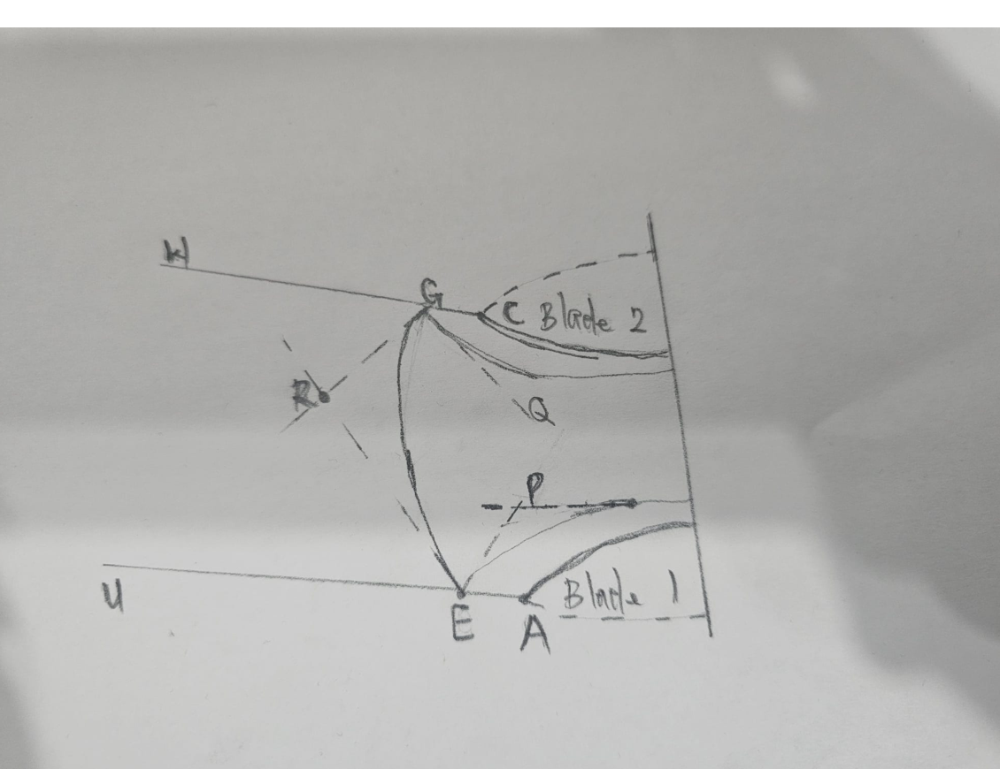
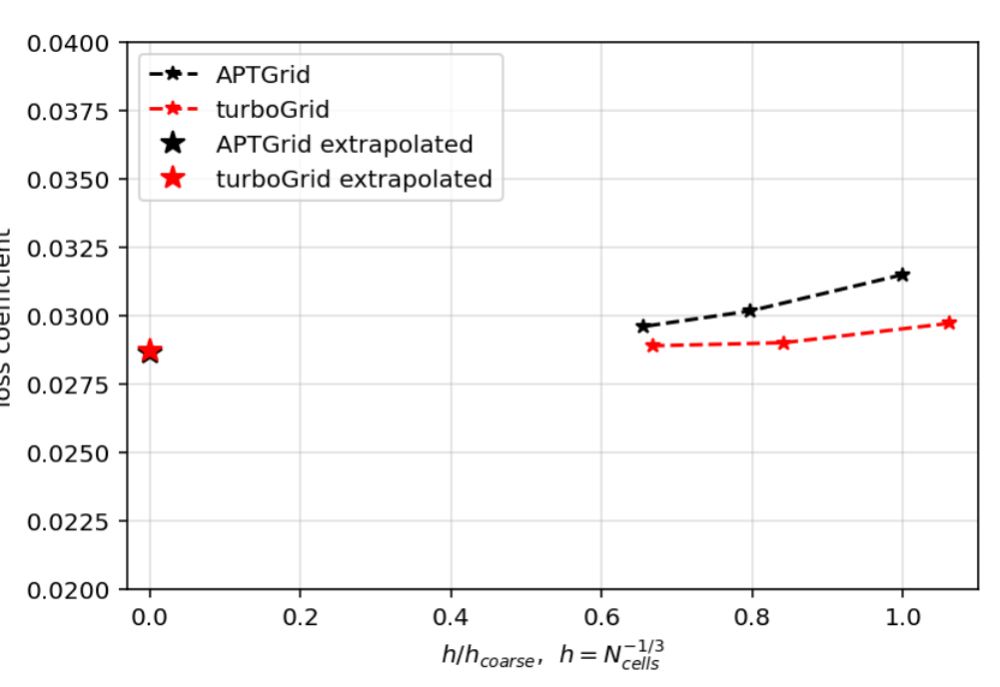

APT-Grid
A Python-based structured mesh-generation framework developed to enable blade-resolved CFD of periodic and aperiodic turbomachinery configurations.
The problem I needed to solve
My PhD research investigates whether aperiodic exit guide vanes can mitigate the aerodynamic degradation associated with boundary-layer-ingesting fans. These designs deliberately vary blade geometry around the annulus, but the commercial turbomachinery meshing tools available to the research did not support the required structured, conformal full-annulus grids. I therefore helped develop the missing capability rather than restrict the design study to periodic blades.
What I developed
I wrote most of the Python code for geometry preprocessing, coordinate transformations, passage boundary construction, and surface generation. The passage-centred OH topology enables each blade passage to be constructed individually while adjacent passages share geometric boundaries.
My supervisor developed the OpenFOAM blockMesh dictionary and the grading-related portion of the Python code. We refined the geometric methods through technical discussions and iterative implementation.
Engineering design decisions
Curve robustness. My first cross-passage construction used an ellipse fitted to endpoints and slopes, plus an additional optimized point. The constrained formulation did not reliably yield a unique result. Following my supervisor’s suggestion, I implemented a quadratic Bézier construction that provides direct control of endpoints and tangent directions without that optimization step.
Conformity by construction. Each passage is generated separately, but the topology defines shared geometric boundaries. Corresponding axial cell counts and grading parameters are averaged and applied across passages to obtain compatible node distributions rather than correcting interfaces afterward.

Verification and demonstrated capability
APT-Grid was evaluated using periodic guide vane test cases, with grid-convergence studies and aerodynamic comparisons against Ansys TurboGrid. A full-annulus aperiodic inlet-guide-vane mesh was also generated and used in a blade-resolved CFD calculation.
The manuscript provides detailed convergence and spanwise comparisons. As the manuscript is still being revised, this page does not treat its preliminary numerical differences as final publication figures.

Scope and limitations
The current software assumes compatible meridional blade projections; geometric input requirements and automated curve-processing constraints remain. Its tested capabilities should not be interpreted as universal support for arbitrary blade-row geometries.